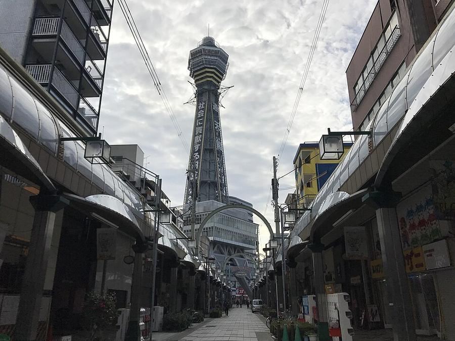
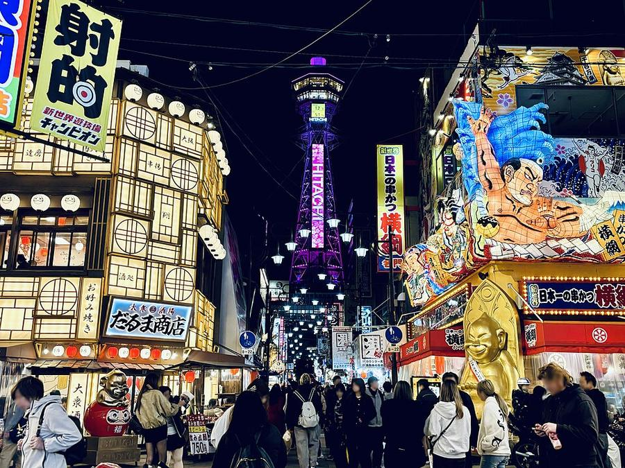
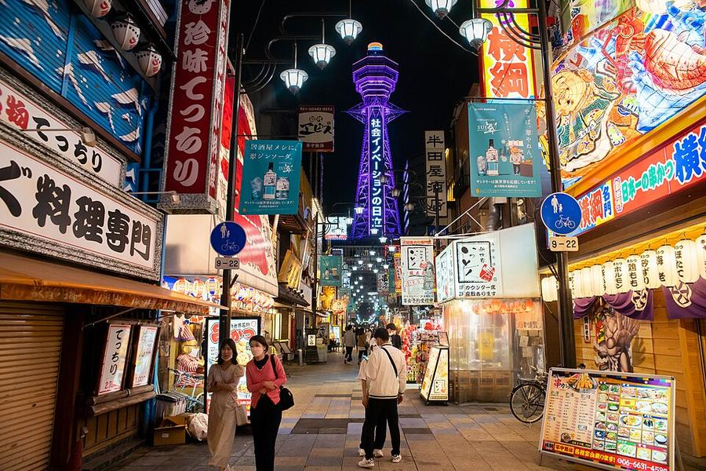
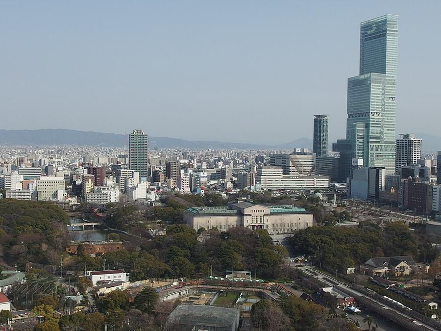

8Shinsekai и башня Tsutenkaku
新世界 / 通天閣 · Юг · Namba, Shinsekai, Tennoji




«Новый мир» открыли в 1912 году: южную часть делали по образцу Coney Island в Нью-Йорке, северную - по образцу Парижа, в центре башня. Нынешняя Tsutenkaku - 1956 года, 100 м, вторая на этом месте. Талисман - божок удачи Billiken.
Самая «народная» Осака: вывески-гиганты, лавки кушикацу (шпажки во фритюре), старые игровые залы. Часть улиц крытая. Сразу южнее - Nishinari, один из самых бедных районов Японии, туда без нужды не заходить.
| Часы | Башня 9:00-21:45, вход до 21:15, билет на время входа |
|---|---|
| Вход | башня 1 500 ¥ (с апреля 2026); горка Tower Slider 1 100 ¥ |
| Наши даты | открыто 24-26.10 |
| На месте | 45-60 мин |
| Дождь | ⛅ часть под крышей, в дождь - частично |
Источник часов и цен: tsutenkaku.co.jp (офиц.)
Как добраться от отеля
- Метро Midosuji (красная) от Umeda 6 остановок до Dobutsuen-mae, 14 мин, + 5 мин пешком. От рынка Kuromon пешком ~18 мин на юг.
Видео


.jpg){kind=link}
Рядом

9. Abeno Harukas 300Смотровая на высоте 300 м, вся под крышей

10. ShitennojiСамый старый государственный храм Японии, 593 год

7. Рынок KuromonКрытый рынок с 1820-х: едят прямо у прилавков
Фото: Wikimedia Commons, автор и лицензия под каждым. Поезда: Yahoo!乗換案内 на 24-26.10.2026, пешие отрезки: OSRM. Часы и цены проверены 25.10.2026 12:49 JST. ← ко всем местам